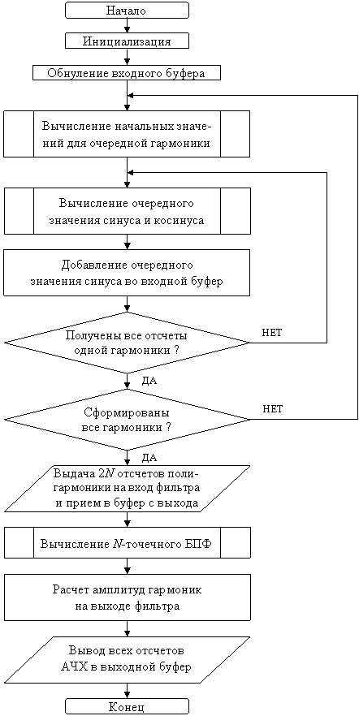
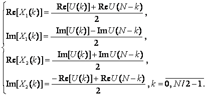

Для измерения АЧХ фильтра может быть использован один из генераторов синусоидальных сигналов, разработанный в [1]. На вход фильтра подается сигнал, представляющий собой сумму синусоид с возрастающей частотой (от минимальной до частоты Найквиста). При этом для исключения резкого скачка сигнала необходимо суммировать синусоиды с различной фазой. Наиболее простой способ – сдвигать очередной синус на 1–2 отсчета.
По истечении времени, необходимого на установку сигнала на выходе фильтра (не менее двух периодов первой гармоники), следует измерить мощность сигнала на каждой частоте, используя программу БПФ из лабораторной работы №6 или №7. Мощность сигнала на соответствующей частоте определяется следующим выражением:
| (8.1) |
где Е(k) – мощность сигнала k-й гармоники; Re(k) – действительная часть изображения Фурье (после БПФ) k-й гармоники; Im(k) – мнимая часть изображения Фурье (после БПФ) k-й гармоники; k – номер гармоники от 0 до частоты Найквиста.
Для нахождения АЧХ фильтра необходимо найти отношение амплитуды синусоидального сигнала на выходе фильтра к амплитуде на входе фильтра на каждой частоте. Зная мощность сигнала, можно найти амплитуду выходного сигнала из следующего соотношения:
| (8.2) |
где Е – мощность сигнала, А – амплитуда синусоидального сигнала.
Если взять для исключения переполнения амплитуды синусоидальных составляющих входного сигнала, равные 2-М, можно получить значение АЧХ фильтра, сдвинув амплитуды выходного сигнала на М разрядов влево.Для измерения АЧХ фильтра используются программы генераторов синусоидальных сигналов из лабораторной работы №1 или №2 и программа цифрового рекурсивного фильтра из лабораторной работы №3.
После обнуления буфера входного сигнала необходимо сформировать N + 2 отсчетов синуса первой гармоники и добавить их в буфер, затем сформировать и прибавить отсчеты второй и всех последующих гармоник. Полученный таким образом полигармонический сигнал необходимо подать на вход фильтра в течение не менее 2N тактов и сохранить сигнал с выхода фильтра в выходном буфере.
После этого необходимо выполнить N-точечное БПФ над второй половиной выходного буфера и, используя выражения (8.1) и (8.2), определить амплитуды всех гармоник на выходе фильтра.
Записав все полученные амплитуды в буфер АЧХ и отобразив этот буфер в графическом виде, увидим на экране монитора АЧХ рассматриваемого фильтра.
Для вычисления квадратного корня X из некоторого числа Y можно воспользоваться следующим алгоритмом:
- Взять в качестве первого приближения квадратного корня X1 = 2-1.
- Возвести текущее приближение квадратного корня Xi в квадрат.
- Сравнить полученное значение Xi2 со значением Y.
- Если значение Xi2 > Y, то вычесть из Xi значение 2-i.
- Вычислить очередную степень двойки 2-(i + 1).
- Получить очередное приближение квадратного корня Xi + 1 , прибавив к Xi значение 2-(i + 1).
- Повторить процедуру начиная с п. 2 еще четырнадцать раз для получения всех пятнадцати разрядов значения квадратного корня X.
Данный алгоритм может быть легко реализован с использованием арифметического устройства вспомогательных регистров и соответствующих способов модификации косвенного адреса.
Для этого необходимо во вспомогательный регистр, например AR1, поместить первое приближение квадратного корня 2-1. Это же значение помещается и во вспомогательный регистр AR0 в качестве текущей степени двойки.
Для реализации операции вычитания из Xi значения 2-i (п. 4) воспользуемся способом модификации косвенного адреса *AR1-0. Получение очередной степени двойки 2-(i + 1) (п. 5) выполняется способом модификации косвенного адреса *AR0+0B (двоично-инверсная адресация или сложение с обратным переносом). Реализация операции сложения Xi со значением 2-(i + 1) (п. 6) выполняется способом модификации косвенного адреса *AR1+0.
Общая схема алгоритма программы измерения АЧХ фильтра представлена на рис. 8.1.

Рисунок 8.1 – Схема алгоритма измерения АЧХ фильтра
При обработке реальных физических сигналов они заносятся в действительные части комплексных чисел временного процесса, а мнимые части при этом обнуляются. Но с помощью одной программы БПФ можно обработать сразу два действительных сигнала. Для этого необходимо использовать эти два действительных сигнала для задания действительной и мнимой частей временного процесса. После вычисления БПФ необходимо произвести разделение полученного изображения комплексного процесса на два изображения действительных процессов в соответствии с формулами
|  |
(8.3) |
где X1, X2 – изображения первого и второго действительных процессов; U – изображение комплексного процесса, полученное с помощью БПФ.
Преобразовав выражения (8.3) для расчета U(k) по изображениям двух действительных процессов X1, X2, можно вычислить обратное БПФ и получить временные реализации двух независимых действительных сигналов.
- Изучить теоретические сведения по теме лабораторной работы (подразд. 8.2).
- Получить у преподавателя задание для выполнения практической части работы.
- Согласно заданию написать, оттранслировать и выполнить программу.
- Продемонстрировать результат трансляции и работы программы преподавателю.
- Оформить и защитить отчет по лабораторной работе.
- Цель работы и исходные данные.
- Описание алгоритма работы программы.
- Листинг программы с комментариями.
- Выводы по работе.